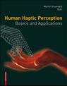

Recognized as:
Arizona State University (352-96-476)
Greater Western Library Alliance GWLA 2007 3707 (621-34-740)
658908 Greater Western Library Alliance Kluwer (merge with GWLA 2006 con acct when possible) (816-71-771)
Welcome!
To use the personalized features of this site, please log in or register.
If you have forgotten your username or password, we can help.
|
|  |
Principles of haptic perception in virtual environments
| |
|
| Human Haptic Perception: Basics and Applications |
| 10.1007/978-3-7643-7612-3_30 |
| Martin Grunwald |
30. Principles of haptic perception in virtual environments
Gabriel Robles-De-La-Torre2
| (2) |
International Society for Haptics, MDM Coyoacán, Apdo. Postal 21-058, c.p. 04021 Coyoacán México, México |
Abstract
During haptic interaction with everyday environments, haptic perception relies on sensory signals arising from mechanical signals such as contact forces,
torques, movement of objects and limbs, mass or weight of objects, stiffness of materials, geometry of objects, etc. (Fig. 1a). In contrast, haptic perception in Virtual Environments (VEs) relies on sensory signals arising from computer-controlled mechanical signals
produced by haptic interfaces (see Fig. 1b, the online animation [1] under Selected Readings and Websites, and [1, 2]). Haptic interfaces are programmable systems, which can reproduce mechanical signals that are normally experienced when
haptically exploring real, everyday environments. Perhaps more importantly, haptic interfaces can create combinations of mechanical
signals that do not have counterparts in real environments. This allows creating haptic VEs in which entirely new haptic sensory experiences are possible.

|
|
|
|
|
|